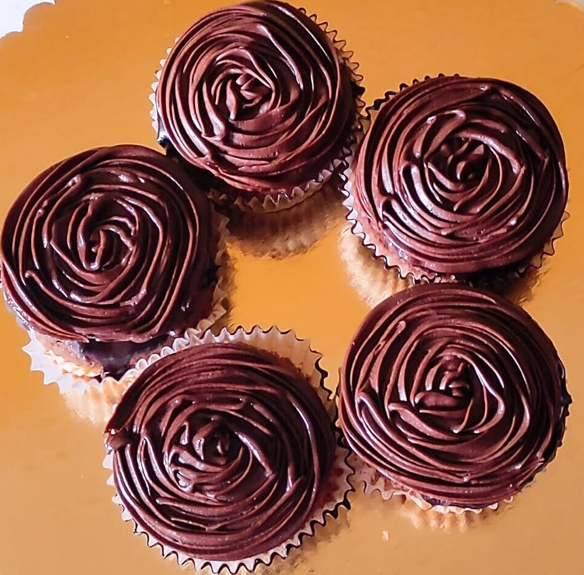
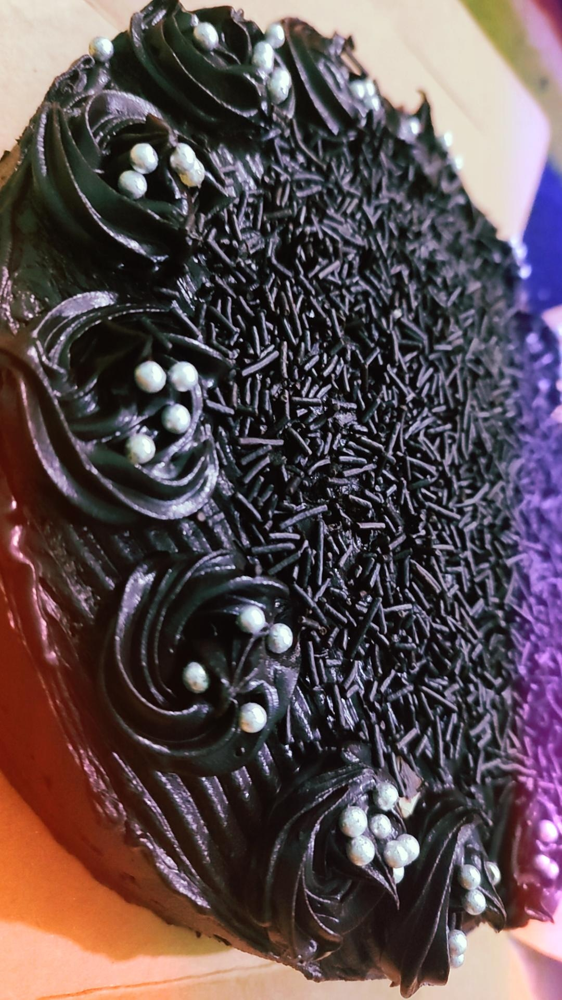
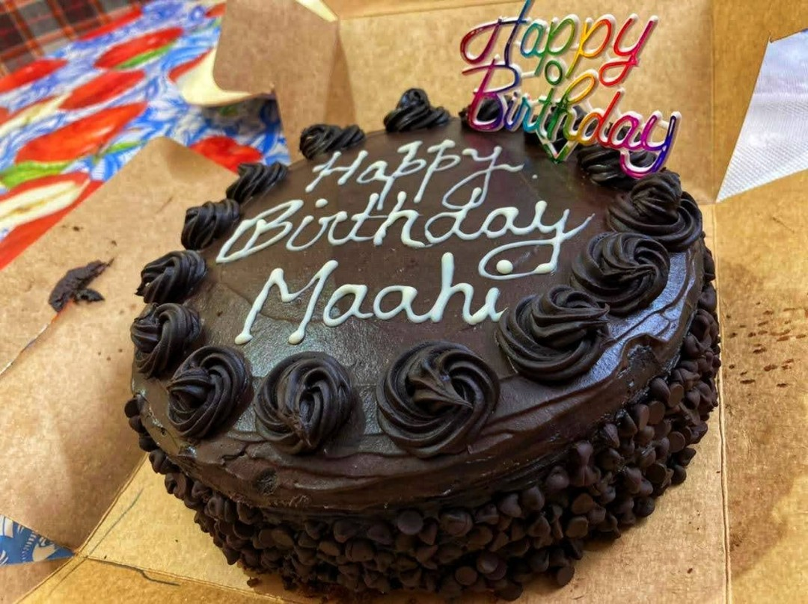

BLISSFUL BAKERY



Hello
I'm a Web Developer.
I'm the founder and CEO of "The Blissful Bakery".
I love watching movies and writing my own stories.
My Skills
I startetd learning Web Development
when i was in my2nd year
and since then i have worked on
lots of projects and built some really beautiful and responsive webpages.
ABOUT BAKING
Baking is a method of preparing food that uses dry heat, typically in an oven,
but can also be done in hot ashes, or on hot stones. The most common baked item is bread,
but many other types of foods can be baked.[1] Heat is gradually transferred "from the surface of cakes,
cookies, and pieces of bread to their center. As heat travels through, it transforms batters and
doughs into baked goods and more with a firm dry crust and a softer center".[2] Baking can be combined with
grilling to produce a hybrid barbecue variant by using both methods simultaneously, or one after the other.
Baking is related to barbecuing because the concept of the masonry oven is similar to that of a smoke pit.
BAKING IN ANCIENT TIMES
The earliest known form of baking occurred when humans took wild grass grains,
soaked them in water, and mashed the mixture into a kind of broth-like paste.[3]
The paste was cooked by pouring it onto a flat, hot rock, resulting in a bread-like substance.
Later, when humans mastered fire, the paste was roasted on hot embers, which made bread-making easier,
as it could now be made any time fire was created. The world's oldest oven was discovered in Croatia in
2014 dating back 6500 years ago.
BAKING IN ANCIENT TIMES
The earliest known form of baking occurred when humans took wild grass grains,
soaked them in water, and mashed the mixture into a kind of broth-like paste.[3]
The paste was cooked by pouring it onto a flat, hot rock, resulting in a bread-like substance.
Later, when humans mastered fire, the paste was roasted on hot embers, which made bread-making easier,
as it could now be made any time fire was created. The world's oldest oven was discovered in Croatia in
2014 dating back 6500 years ago.